### E-Security 1 - Sicherheitsmanagement #### Wintersemester 2017/2018 FH JOANNEUM
### Entwicklung - "Pre - IT" - Notwendigkeit aus tragischen Ereignissen der Industriegeschichte - Erkenntnis: Prozesse zur Dokumentation von Risiken und Maßnahmen zur Lösung/Minimierung
### Rechtlichte Vorgaben - Letztverantwortlichkeit immer bei der Unternehmensleitung ("Geschäftsführerhaftung") - Datenschutzgesetz (Ersatz durch EU Verordnung im Mai 2018) - "Data Breach Notification Duty" - Verbandsverantwortlichkeitsgesetz (VBVG) - Arbeitsrecht - ... <aside class="notes">Datenschutzgesetz (§14 DSG 2000: ua. Dokumentation von Sicherheitsmaßnahmen,...). Verbandsverantwortlichkeitsgesetz: Mitarbeiter tut etwas illegals mit IT-Equipment</aside>
### Schützenswerte Informationen ("Assets") im/für Unternehmen - IT Systeme (Software, Hardware, ...) - Infrastruktur (USV-Anlagen, Klimaanlagen, Kommunikationsanlagen, ...) - Personelle Ressourcen (Know-how, Ausbildung, Erfahrung, ...) - Reputation (Aussenwirkung auf Kunden)
### Sicherheitsmanagement ... - ... Unterstützt das Unternehmen in allen Bereichen des Alltages - ... Unterstützt beim Erreichen des "Business Zwecks" ### Treffen von Entscheidungen ... - ... "Duty of loyalty" - ... "Duty of care" (Sorgfaltspflicht)
### Wikipedia sagt ... - "Das Sicherheitsmanagement führt, lenkt und koordiniert eine Organisation in Bezug auf alle Sicherheitsaktivitäten" - "Er beschreibt einen fortlaufenden Prozess innerhalb einer Unternehmung oder Organisation zur Gewährleistung der IT-Sicherheit"
### Sicherheitsmanagement im Unternehmen - nicht eine Person bzw. Ämter in Personalunion - Unterschiedliche Abteilungen mit unterschiedlichen Zuständigkeiten
- Management / "Board of Directors" - Gesamtverantwortlichkeit, bekommt "Management Summary" und Security Briefing - General Management - "Head of", Abteilungsleiter, ... - CEO, CIO, ... - Chief security officer (CSO) - Entscheidungsträger für Fragen rund um Unternehmenssicherheit
- Risk management officer (RMO) - Erstellung von Risiko-Bewertungen/Einschätzungen - Chief information security officer (CISO) - Policy Erstellung, Schulungen, Incident Management, nicht nur technisches sondern auch Geschäfts-Know-How - Business unit (information) security officer (BSO/BISO) - Security in der Abteilung (z.B. Code Review, Einhaltung von Coding Standards)
- Cybercrime incident response team (CIRT) - Identifikation, Analyse und Abwehr von "cyber crime" - IT Department - Zuständig für den Betrieb/Alltag - Security department - Physische Sicherheit des Gebäudes und Personal
### Abteilungen innnerhalb des Unternehmens - Trennung von Aufgaben und Verantwortungen - Welche Abteilung berichtet an welche Abteilung/Position (Weisungsgebunden!) - Besetzung oft abhängig von Unternehmensgröße
### Organisationsstruktur 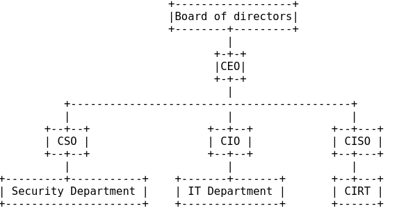
### Kontakt im Praktikum? - Personen/Abteilungen oder "Auswirkungen" von Sicherheitsmanagement?
### Policies - Sicherheitsmanagement braucht Regelwerk=Policies - Entscheidungen müssen anhand von Policies getroffen werden - Verschiedene Policies für verschiedene Abteilungen
### Policies - Periodischer Review und Anpassung von Policies notwendig - Reaktion auf Veränderungen innerhalb des Unternehmens als auch externe Gegebenheiten - Commitment/Schulung der Mitarbeiter - Immer abhängig von Unternehmensstruktur - Nachschulung, Wiederholung, Awareness-Training - Immer mit Geltungsbereich und Verantwortlichkeiten
### Generelle Policy - Für alle Mitarbeiter/-innen gültig - Beschreibt meist grundsätzlichen Umgang mit IT-Equipment - Unterschrift am ersten Arbeitstag - Nicht übertreiben (z.B.: Passwort Policy) => höheres Risiko - Beispiel: "Usage of IT Equipment"
### "Usage of IT Equipment" - Scope? Alle Mitarbeiter - Geltungsbereich? Hardware, Storage und Kommunikation - Rechte und Pflichten? Hausverstand!
### "Usage of IT Equipment" - Aspekte - Private Verwendung von IT Equipment (Social Media?) - Regelung bei Entlassung/Kündigung (E-Mail, Files, ...) - Installation von Software - Privategespräche am Firmen-Handy - Verbot von Streaming Diensten - Abspeichern von privaten Files (Verbot von USB Sticks, ...) - Monitoring von Internet-Access - Konsequenzen bei "nicht beachten"
### Abteilungsspezifische Policies - Admins haben andere Policies als Mitarbeiter im Sales - Immer als Zusatz zur generellen Policy - Notwendigkeit von speziellen Schulungen/Trainings (z.B.: OWASP)
### Ablaufspezifische Policies - Regelwerk welches meist nur auf wenige Mitarbeiter/-innen zutrifft - Beschreibt Regeln auf dessen Basis Entscheidungen getroffen werden - Beispiel: "Firewall Change Request", "Passwort Komplexität für SSH logins"
### Beispiel: "Firewall Change Request" Policy Was könnte da drinnen stehen?
### Beispiel: "Firewall Change Request" Policy - Beschreibt Ablauf des Genehmigungsprozess - Was darf freigegeben werden, was nicht? - Periodische Kontrolle/Review der Firewall Regeln (Papier vs. Wirklichkeit) - Wo werden unsichere Protokolle verwendet - "Business Reason" - Datum: Erstellt, Reviewed, Update - Sign-off - Welche Informationen müssen im Request vorhanden sein - Geltungsbereich (Interface, IP, ...)
### Was noch? - Nicht nur klassische "IT Regeln/Vorgaben" - physikalische Sicherheit nicht vergessen - Datenvernichtung, Zutrittskontrolle, Klimaanlage, Videoüberwachung
### physikalische Sicherheit - Datenvernichtung: Wie lange müssen Daten aufbehalten werden? Sicher vernichten? - Zutrittskontrolle: Mitarbeiterausweise, Vereinzelungsanlagen - Klimaanlage: Abschaltung welcher Systeme zuerst? - Videoüberwachung: DSG: wie lange wird gespeichert? Audio? - Empfang: Anmelden von Besuchern - Schlüsselverwaltung: Wer hat Zugang zum Firmensafe?
### Übersicht 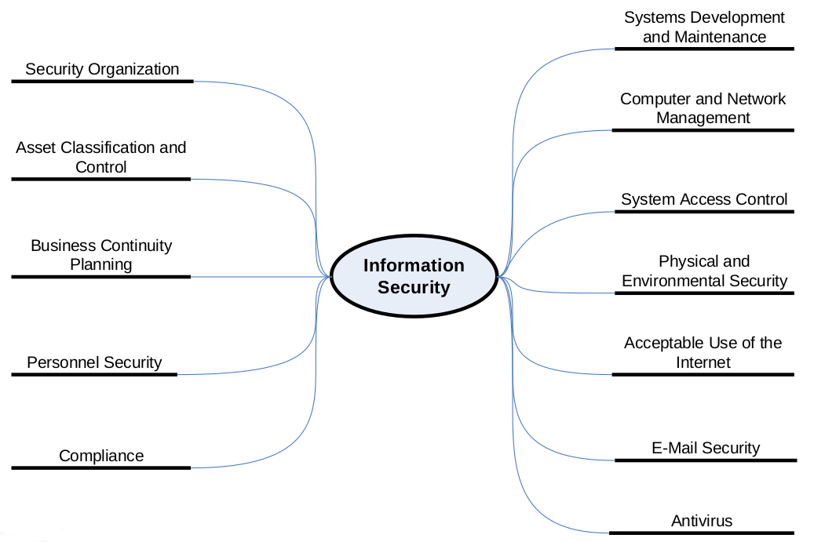
### Policy Deployment - neue Policies stufenweise in Kraft treten lassen - "Nachschärfen" wo notwendig - Übergangsphasen einplanen
### Awareness Training - Periodisches Training (1-2x pro Jahr) - Anpassen der Inhalte auf Aktualität und Alltag - Mitarbeiter/-innen bei ihrem spezifischen Know-How abholen - Vortrag oder im Browser - Bestätigung über Teilnahme
### Awareness Training - Feedback Runde - Fragen von den Mitarbeiter/-innen - Viele Beispiele aus der Praxis einbauen
#### Awareness Training @ Wirecard 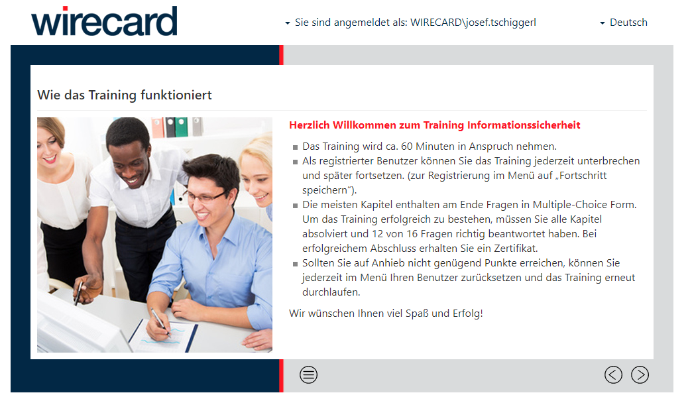
#### Awareness Training @ Wirecard 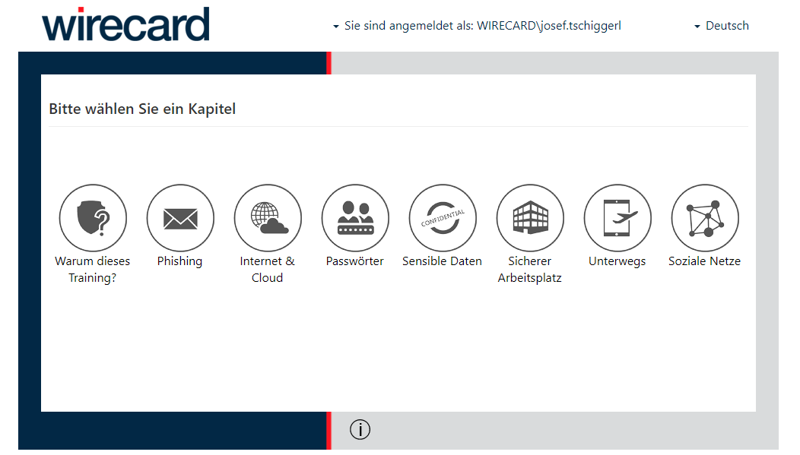
#### Awareness Training @ Wirecard 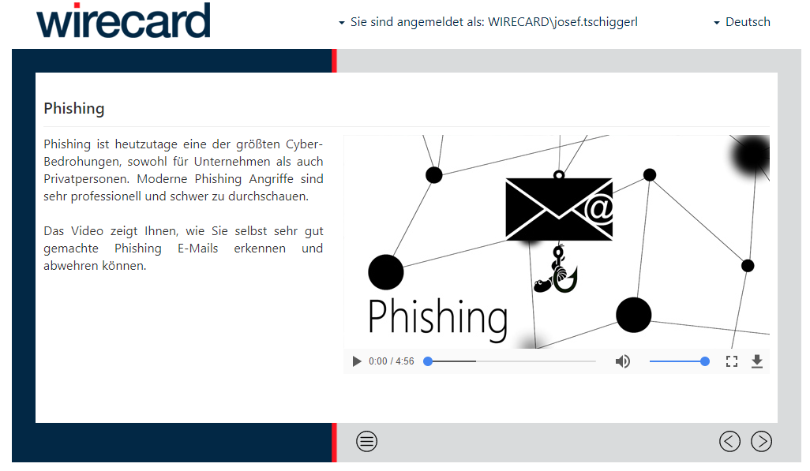
#### Awareness Training @ Wirecard 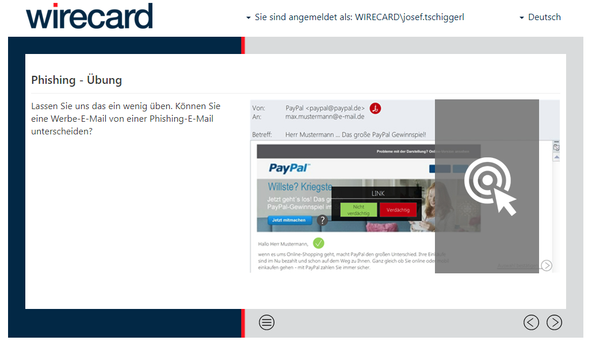
#### Awareness Training @ Wirecard 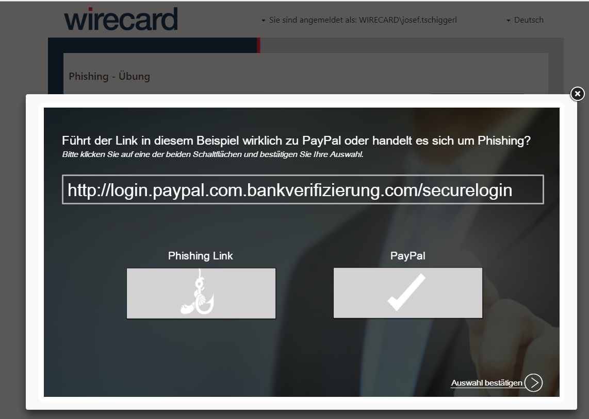
#### Awareness Training @ Wirecard 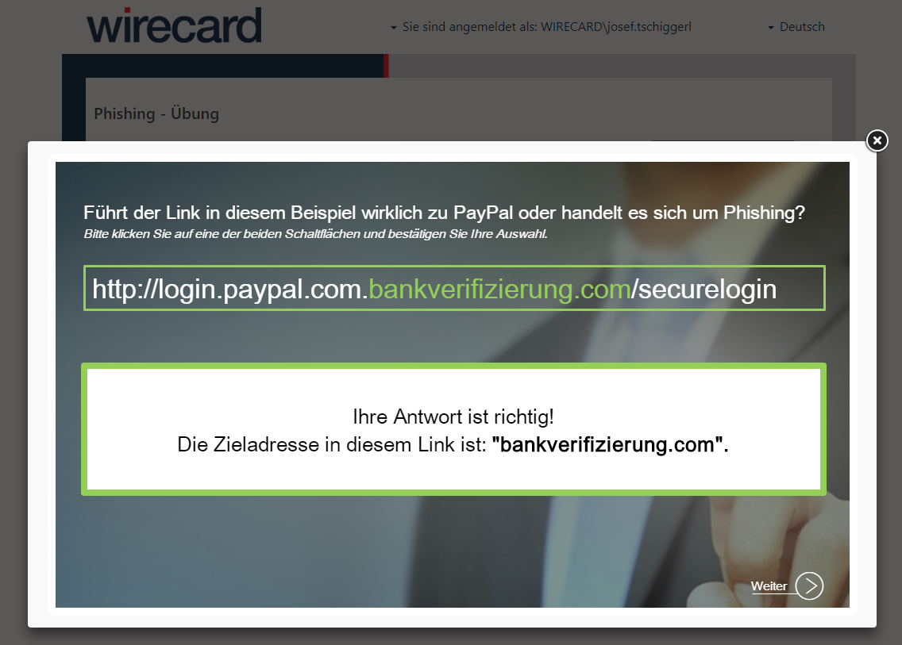
#### Awareness Training @ Wirecard
#### Awareness Training @ Wirecard 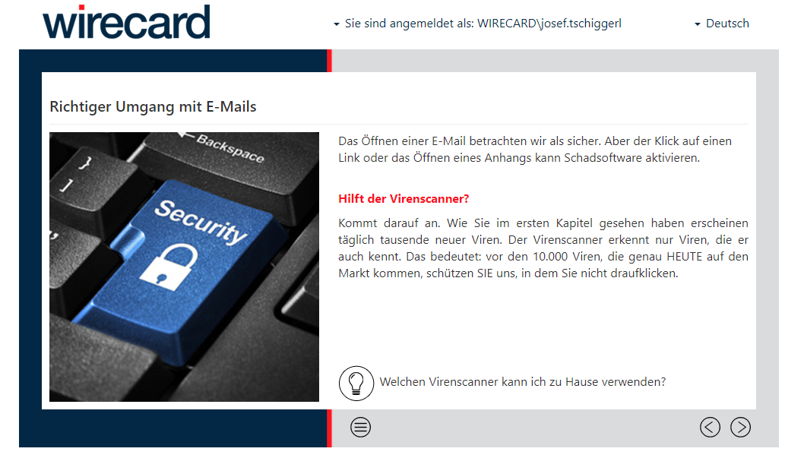
#### Awareness Training @ Wirecard 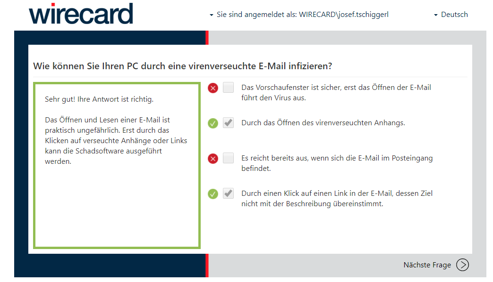
#### Awareness Training @ Wirecard 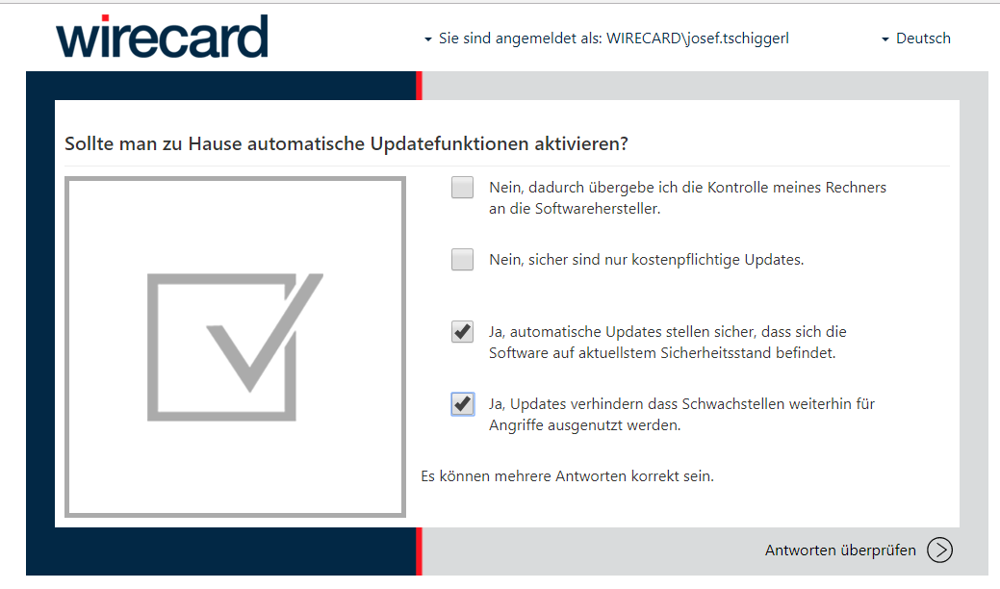
#### Awareness Training @ Wirecard 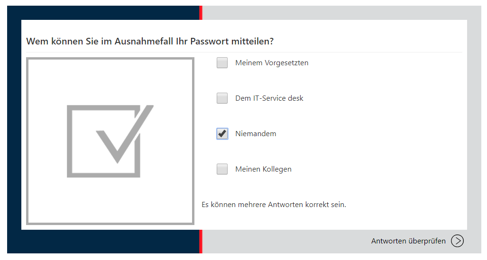
#### Awareness Training @ Wirecard
#### Awareness Training @ Wirecard 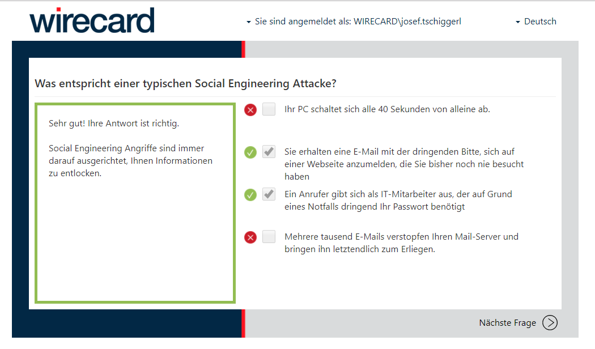
#### Awareness Training @ Wirecard 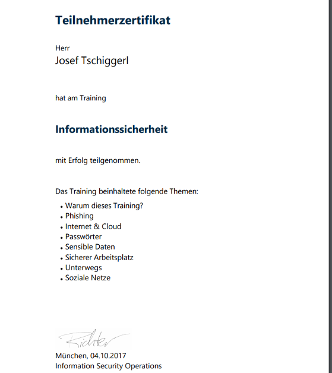
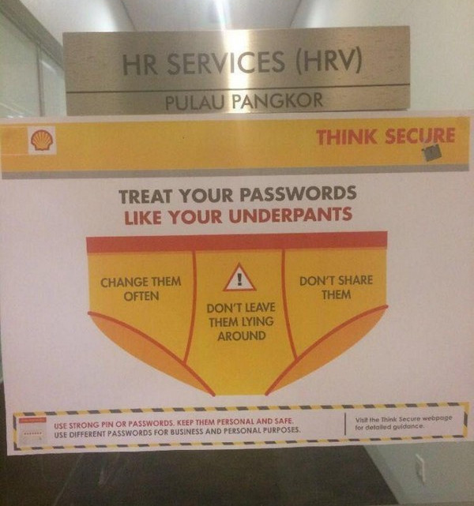
### E-Security 1 - Sicherheitsmanagement #### Wintersemester 2017/2018 FH JOANNEUM
### Quellenverzeichnis - E-Security Unterlagen - Prof.(FH) DI Ewald Graif - Wikipedia: https://de.wikipedia.org/wiki/Sicherheitsmanagement ; https://de.wikipedia.org/wiki/IT-Sicherheitsmanagement - Weiterführende Informationen: https://github.com/joseftsch/esec1 - WKO IT Sicherheitshandbuch (http://wko.at/ic//IT_Handbuch_KMU_2017.pdf) - https://pleated-jeans.com/wp-content/uploads/2017/11/tr-13.jpg